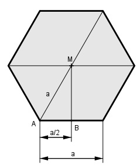

Aufgabe 103 Aus 350 cm³ Kunststoff soll ein regelmäßiges sechseckiges Formteil gepresst werden, das 6 cm dick ist. Wie groß ist die Seite a des Sechsecks?  Satz von Pythagoras im Dreieck MAB: AM² = AB² + MB² |-AM² a a² 3 MB² = AM² - AB² = a² - (---)² = a² - ---- = --- a²|√ 2 4 4 a MB = --- * √3 2 V = G * d Die Grundfläche besteht aus 6 gleich großen Dreiecken A: a --- * √3 a * 2 G = 6 * A = 6 * ---------------- 2 a² * √3 a² * √3 G = 6 * ---------- = 3 * ----------- 4 2 a² * √3 350 = 3 * --------- * 6 cm³ |*2 2 700 = 3 * a² * √3 * 6 cm³ |:3 * √3 * 6 22,45 = a² |√ a = 4,74 cm